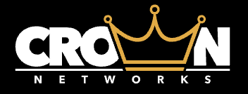

Proving Rev.io can modernize Crown’s project execution without repeating another painful PSA rollout.
Crown Networks is re-evaluating Rev.io after a prior evaluation stalled around project management maturity. The decision now centers on whether Rev.io can make projects, work orders, subcontractors, billing, payments, vendor costs, and reporting easier than ConnectWise.
A project-driven networking and business technology provider built around assessment, design, installation, and long-term support.
Business profile
Crown Networks positions itself as a single point of contact for business IT, networking, structured cabling, voice, cloud, smart hands, power/cooling, and multi-tenant building solutions.
Operating model
Their website emphasizes a four-stage process: assess requirements, design the solution, install professionally, and support clients as environments change over time.
Why this matters
That model creates real project complexity: project managers, subcontractors, work orders, vendor costs, invoicing, payments, QuickBooks, and reporting all need to stay connected.
Source basis: Crown Networks website plus the Crown Networks Evaluation Planner in Notion.
Crown has already paid the tuition for a hard PSA implementation. The question is whether they want another renewal cycle in a system they describe as clunky.
ConnectWise adoption is shallow
Project managers only use ConnectWise minimally because project workflows feel too clunky. That leaves project execution outside the system of record.
Work is scattered
Detailed work orders are built in Word, stored in OneDrive/file servers, converted to PDFs, and sent to subcontractors. Project data is split across Word, Excel, folders, ConnectWise, and accounting tools.
Renewal timing creates a decision window
Crown’s ConnectWise renewal is likely November/December. A focused Rev.io demo now gives Ron time to evaluate, price, plan migration, and avoid rushing later.
Implementation risk is the real objection
Ron is open to switching, but cautious after nearly two years of ConnectWise setup and the cost/time that still has not fully paid back.
The pain is not just PSA dissatisfaction. It is project, subcontractor, billing, and accounting friction showing up every week.
Project management is not trusted
ConnectWise is viewed as outdated, time-consuming, difficult to configure, and not usable enough for project managers to run detailed project workflows inside it.
Work orders are manual
Subcontractor instructions live in Word/PDF workflows instead of a centralized project/ticket process, which increases version control risk and manual admin.
Subcontractor scale complicates licensing
Crown may coordinate with up to ~160 subcontractors, so Rev.io needs to show external coordination without assuming every subcontractor needs a full user license.
Payment/accounting stack still creates cleanup
Crown recently adopted WiseSync/WisePay, but QuickBooks sync errors still require accounting fixes. That creates sunk-cost hesitation and ongoing reconciliation effort.
Rev.io’s value case is simpler project execution, cleaner billing/accounting flow, and lower risk than staying with a platform Crown already doubts.
Less admin drag
Centralized projects, tickets, tasks, documents, and Revy AI-assisted summaries can reduce the back-and-forth of Word, PDFs, folders, and manual updates.
Better revenue capture
Progressive billing, deposits, milestone invoicing, project billing, and invoice/payment visibility help connect work completed to money collected.
Cleaner cost and margin visibility
Vendor/distributor integrations, pricing updates, cost tracking, and project profitability reporting can make job economics easier to see before margin erodes.
Avoid another bad implementation cycle
The win is not “switch tools.” It is proving Rev.io can be adopted faster, configured cleaner, and supported better than Crown’s ConnectWise experience.
ROI is directional because exact project volume, work-order frequency, accounting error rate, and manual hours were not provided. Firm-up data should be collected before final pricing/migration planning.
The demo needs to prove the exact workflows Crown cares about — especially project management, subcontractors, QBO, and payments.
Project execution
- Project phases, milestones, tasks, activity, table/Gantt views
- Tickets tied to projects and customer/project history
- Templates/documents for detailed subcontractor work orders
- PDF/work-order generation without licensing every subcontractor
Quote-to-cash
- Quote templates, product catalog, e-signature
- Quote-to-ticket/project workflow
- Deposits, progressive billing, milestone/project invoicing
- Native payments, payment portal, surcharging, invoice/payment visibility
Systems and reporting
- QuickBooks Online sync with fewer errors than current WiseSync/WisePay flow
- Ingram Micro, TD Synnex, ADI, Pax8 vendor/distributor context
- Pricing/cost updates, margin visibility, project profitability
- Revy AI for tickets, customers, reports, and work-order summaries
Position mobile carefully
Mobile is useful for internal users, but Crown’s subcontractor-heavy model means the demo should prioritize internal PM workflows and external coordination over “everyone logs in.”
Open questions to firm up
Confirm renewal date, project volume, number of internal users, current WiseSync/WisePay costs, QBO error frequency, work-order creation time, and how subcontractors receive/return updates today.
Win the next step by making project management the centerpiece, not a side feature.
1. Send recap and demo times
Andy sends Ron a concise recap of the reconnect call and available demo times for later this week or early next week.
2. Run a focused project demo
Lead with project management, quote-to-project, progressive billing, work orders, subcontractor coordination, vendor costs, QBO, and payment workflows.
3. Address implementation risk head-on
Cam and the Rev.io team should explain onboarding, configuration, migration, training, structured support, and how Rev.io avoids another two-year slog.
4. Move to pricing and renewal strategy
If Ron sees clear value, confirm renewal timing, price the right internal-user model, validate subcontractor handling, and build a migration plan before the likely Nov/Dec renewal.
Recommended next step: schedule Ron for a focused demo that proves Rev.io’s current project management, progressive billing, work-order, subcontractor, QBO, and payment workflows are materially better than Crown’s current ConnectWise process.